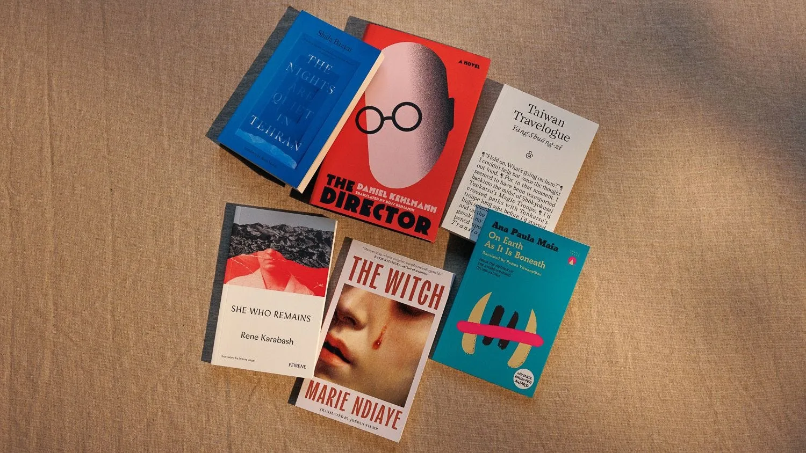

Why the 2026 International Booker Shortlist Marks a Quiet Revolution
Six books, six formal experiments. The strangest International Booker shortlist in the prize’s ten-year history, and one writer’s pick for the 19 May winner.

I read prize lists the way some people read horoscopes. Looking for hints. Looking for what the judges are trying to tell us about the year ahead.
The 2026 International Booker shortlist landed on Tuesday 31 March, and the first thing I noticed was that not one of the six books is a novel in any standard sense. One is framed as the rediscovered diary of a fictional Japanese writer, with footnotes by a fictional translator, then footnoted again by the real translator. One is told entirely from the outside, in cinematic shots, with no access to the protagonist’s inner life. One has almost no punctuation. One is 101 pages. One was first published in French thirty years ago and is only now reaching English. One is a polyphonic novel that crosses four decades and four narrators.
Six books, six different ways of refusing to do what a novel is supposed to do.
This is the tenth year of the International Booker Prize in its current form, the form where it honours a single book translated into English from any language in the world. The prize has been quietly evolving over that decade in ways nobody talks about. When it started in 2016 it tended to honour what you might call the great translated European novel, the kind of book that sat comfortably alongside the literary fiction your local Waterstones already stocked. Last year it gave the prize to Heart Lamp by Banu Mushtaq, a short story collection in Kannada, the first short story collection ever to win it and the first book translated from any Indian language. This year it has shortlisted six formal experiments. The transformation is almost complete.
The unique thing about the 2026 shortlist isn’t that it celebrates translated fiction. The prize has always done that. The unique thing is that it celebrates the kind of fiction nobody else has the appetite to honour. It celebrates compression. It celebrates strangeness. It celebrates the books that take risks the big English-language prizes are too cautious to back. After the year I spent writing about the trends in literary fiction in 2026, this shortlist feels like the clearest statement yet that the form is moving somewhere new and that translated fiction is leading the way.
Here are the six books, with what I think you should know about each.
Taiwan Travelogue by Yáng Shuāng-zǐ, translated from Mandarin by Lin King
This one is the wildest of the six structurally. Yáng wrote the novel in Taiwan in 2020, where it became a bestseller and won the country’s highest literary prize, the Golden Tripod Award. It is presented as a translation of a rediscovered 1954 Japanese novel by a fictional writer called Aoyama Chizuko, who travels through Japanese-occupied Taiwan in 1938 with a local interpreter. There are footnotes by a fictional translator. Then footnotes by the real translator. The whole book is a nesting doll about who gets to tell whose story.
Underneath the metafiction is a quietly affecting love story between the Japanese writer and her Taiwanese interpreter, a meditation on colonial power that never feels like a lecture, and some of the best food writing I have read in years. Lin King’s translation already won the US National Book Award for Translated Literature in 2024. This is the first Taiwanese book ever to make the International Booker shortlist.
Buy Taiwan Travelogue from Bookshop.org →The Witch by Marie NDiaye, translated from French by Jordan Stump
NDiaye is one of the great living French writers. She won the Prix Goncourt for Three Strong Women in 2009 and The New Yorker recently predicted she will win the Nobel. The Witch is a strange entry on the shortlist because it isn’t new. It was first published in French in 1996 as La Sorcière. It has taken thirty years to reach English, which tells you something about how slowly the translation pipeline moves and how much we miss because of that delay.
The book is about Lucie, a mediocre witch in a mediocre marriage, trying to pass on her family’s matrilineal gift of seeing the future to her twelve-year-old twin daughters. The girls quickly become more powerful than she is. Then they leave her. NDiaye writes about domestic life with the patience of a realist and the disquiet of a fabulist, and the result is a 144-page book that reads like a fever dream that knows exactly what it is doing. Jordan Stump has been translating her for years and the partnership shows.
Buy The Witch from Bookshop.org →The Director by Daniel Kehlmann, translated from German by Ross Benjamin
Kehlmann is the best-known name on the shortlist outside academic circles. His novel Tyll was shortlisted for the same prize in 2020. The Director is based on the real life of G. W. Pabst, the Austrian filmmaker who discovered Greta Garbo and Louise Brooks, made Pandora’s Box, failed in Hollywood, and returned to Austria in 1939 just as the borders closed behind him. He spent the war making films for Joseph Goebbels.
The formal experiment here is that we never see inside Pabst’s head. The book is told from the outside, in scenes, with the visual logic of cinema. We watch a man slide into complicity one small accommodation at a time and we never get the comfort of knowing what he was thinking. Kehlmann’s father lived through the Nazi era in Austria as a Jew. The book carries that weight without ever raising its voice. Jeffrey Eugenides has called Kehlmann the finest German writer of his generation, and the judges are calling this his best work yet. I think they are right.
Buy The Director from Bookshop.org →The Nights Are Quiet in Tehran by Shida Bazyar, translated from German by Ruth Martin
This is one of two debut novels on the shortlist. Bazyar is a German writer of Iranian heritage, born in 1988, who interviewed her own parents about their experiences as young revolutionaries in Iran in 1979 before they fled to West Germany. The novel is polyphonic, told across four decades from 1979 to 2009, through four different family voices. It moves between Tehran and West Germany, between hope and exhaustion, between the parents who left and the children who grew up not quite belonging anywhere.
What makes this book matter right now is that it refuses the easy version of the exile story. It does not collapse into nostalgia. It does not collapse into bitterness. It sits patiently in the space between, where most exiles actually live. Ruth Martin’s translation handles the four voices with real care, which is harder than it sounds, and the polyphonic structure pays off in the small ways the voices echo and rhyme across decades. This is the kind of debut that suggests a long career ahead.
Buy The Nights Are Quiet in Tehran from Bookshop.org →She Who Remains by Rene Karabash, translated from Bulgarian by Izidora Angel
The other debut on the shortlist. Karabash is the pen name of Irena Ivanova, a Bulgarian poet, screenwriter and actress who won several Best Actress awards for her role in the film Godless, which premiered at Locarno. She spent two years researching the Kanun, an ancient Albanian code of law that still operates in the remote villages of the Accursed Mountains. The novel is set in one of those villages and tells the story of Bekija, who escapes an arranged marriage by becoming a “sworn virgin”, a recognised gender role under the Kanun in which a woman renounces her femininity and lives the rest of her life as a man.
The book is told mostly without punctuation, in the kind of incantatory stream that makes you slow down whether you want to or not. It is being called the first Bulgarian queer novel to reach this kind of international recognition. Izidora Angel’s translation already won the Gulf Coast Translation Prize in 2023, and the book is published in the UK by Peirene Press, the small London imprint that has been quietly putting out short translated novels for years. 146 pages of compressed pain and strange beauty.
Buy She Who Remains from Bookshop.org →On Earth As It Is Beneath by Ana Paula Maia, translated from Portuguese by Padma Viswanathan
The shortest book on the shortlist at 101 pages. Maia is one of the most distinctive voices in contemporary Brazilian fiction. Her previous novel Of Cattle and Men won the UK Republic of Consciousness Prize in 2023. On Earth As It Is Beneath is set in a remote Brazilian penal colony built on land where enslaved people were once tortured and killed. The warden, a man called Melquíades, has begun releasing prisoners into the surrounding forest at full moon and hunting them for sport.
Maia writes the way Cormac McCarthy used to write, only shorter. Spare, biblical, unflinching. Padma Viswanathan, the translator, is a Canadian-American novelist in her own right, twice shortlisted for major prizes for her own fiction. Charco Press, the small Edinburgh-based publisher behind the English edition, has been quietly building one of the best translated-fiction lists in the world for years. Seeing them on this shortlist is a vindication of how a small press can still shape the conversation.
Buy On Earth As It Is Beneath from Bookshop.org →My pick
I am calling it for She Who Remains.
Not because it is the most polished. The Director is more polished. Taiwan Travelogue is more clever. The Witch carries the weight of a major writer’s late career. I am calling it for She Who Remains because the International Booker has been moving for years toward exactly this kind of book, and this year feels like the year it gets there. A debut. A small press. A queer novel from a country that almost never makes the conversation in English. A formal experiment that refuses to be a normal novel. Translated by a woman who has been quietly building a career in Bulgarian-to-English translation against significant odds. Everything about it fits the trajectory the prize is on.
If the judges go a different way, my second pick is The Director. Kehlmann is overdue and this is the strongest book of his career.
The winner will be announced on Tuesday 19 May at Tate Modern in London. I will probably watch the announcement on my phone in a pub somewhere and see which way the prize has decided to lean. If you want to read along with me before then, the six books are above. If you want to see what other prize lists I have been watching this spring, my piece on the 2026 Pulitzer Prize for Fiction contenders covers the American side of the calendar.
Whatever happens on 19 May, the real story of the 2026 shortlist is already clear. Translated fiction has stopped trying to look like the books we already have. It has started showing us what fiction can do that nothing else can.
That is worth celebrating.
This page contains Bookshop.org affiliate links. If you buy through them, Tumbleweed Words earns a small commission at no extra cost to you.